În stînga este slide-ul din curs, în dreapta aceeași figură, calculată în browser din aceleași date. Butonul ▶ modifică parametrul pas cu pas.
Sezonalitatea în datele economice · Diferențierea sezonieră și rădăcinile unitare sezoniere · Modele SARIMA · Studiu de caz: modelul airline · Studiu de caz: PIB-ul neajustat al României · Ajustarea sezonieră în practică · Termeni Fourier și efecte de calendar · Sezonalitate multiplă: consumul de electricitate · TBATS și Prophet · Evaluarea prognozelor · Combinarea prognozelor
Sezonalitatea în datele economice
Sezonalitatea în șase serii din România
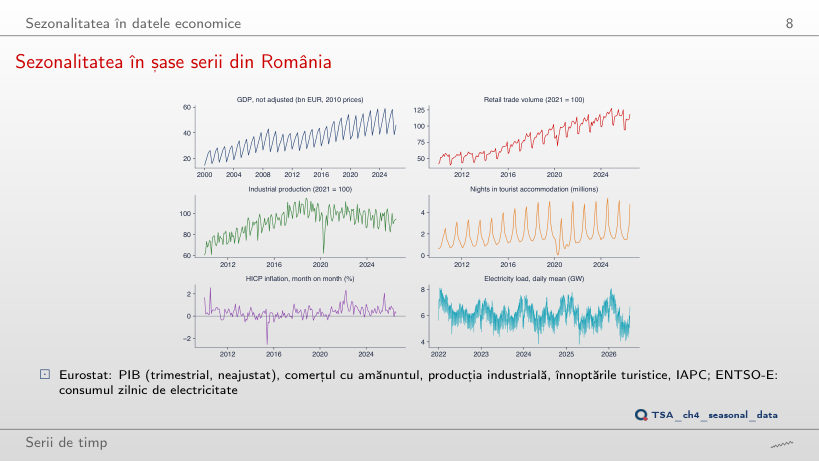
Răspuns
În ianuarie: 0,575% în medie, urmată de octombrie, 0,487%; cea mai mică este în iunie, −0,368% (alimentele proaspete). Ordinea depinde de perioadă: pe 2015–2019, octombrie are 0,575% și mai 0,457%. Pentru PIB, media trimestrului 4 este cu 57% peste media trimestrului 1 (27,8 și 43,6 mld. EUR, 2000–2026); pentru turism, august are de 3,7 ori mai multe înnoptări decît ianuarie (2015–2019).
Graficul sezonier și graficul pe subserii
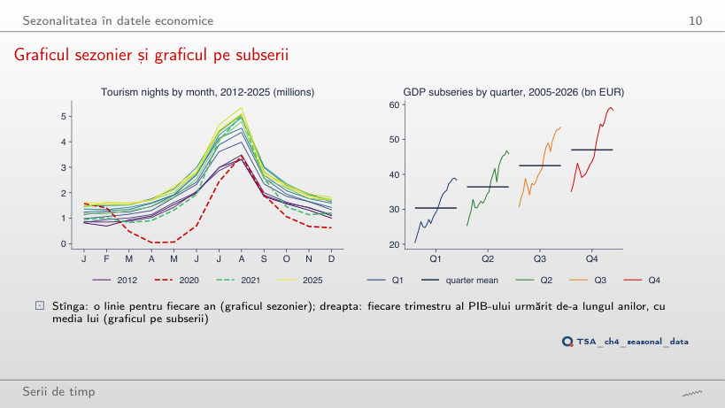
Răspuns
În 2021: 5,3, față de 3,4 în 2019 și 2,2 în 2020. În ianuarie 2021 restricțiile țineau încă turismul jos, iar vara a revenit; în 2020 a fost afectată și vara, iar aprilie 2020 a avut doar 0,045 milioane de înnoptări. Forma anului rămîne aceeași: august este luna de vîrf în fiecare an. La PIB, cele patru subserii păstrează ordinea T1 < T2 < T3 < T4 în toți cei 21 de ani din 2005–2025.
Diferențierea sezonieră și rădăcinile unitare sezoniere
Diferența sezonieră
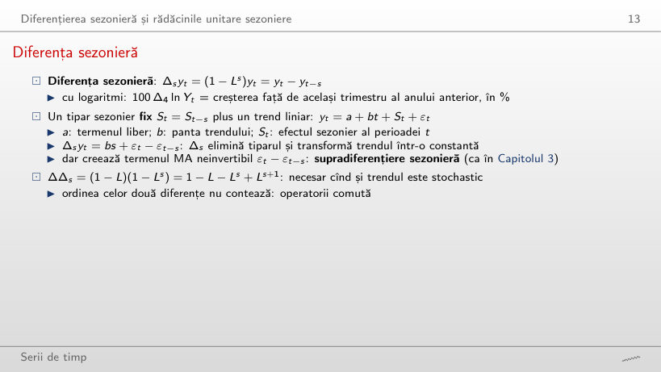
Exemplu rezolvat
Răspuns
Nu: 17,9 este saltul sezonier de la T1 la T2 (factorii NSA/SCA ai PIB sînt 0,78 în T1 și 0,93 în T2). Comparația cu același trimestru elimină sezonul: PIB-ul din T2 2026, 45,88 mld. EUR, este cu 1,96 puncte logaritmice sub cel din T2 2025, 46,79 mld. EUR. ΔΔ₄y = −0,46 arată că scăderea anuală s-a adîncit, de la −1,50 în T1 2026 la −1,96.
Rădăcinile lui 1 - z^s: rădăcini unitare sezoniere
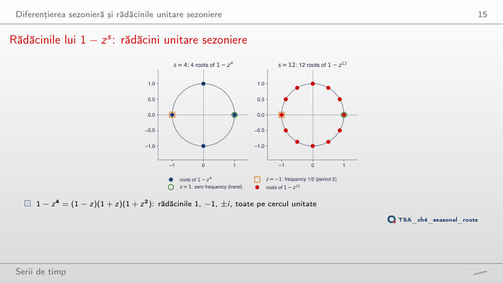
Răspuns
Una singură, z = 1. Rădăcina z = −1 (perioada de 2) există doar cînd s este par; pentru s = 7 celelalte șase rădăcini formează trei perechi complex conjugate, cu perioadele 7, 3,5 și 2,33 zile. Pentru s = 4: 1, −1 și ±i; pentru s = 12: 1, −1 și cinci perechi.
Interpretarea rădăcinilor sezoniere
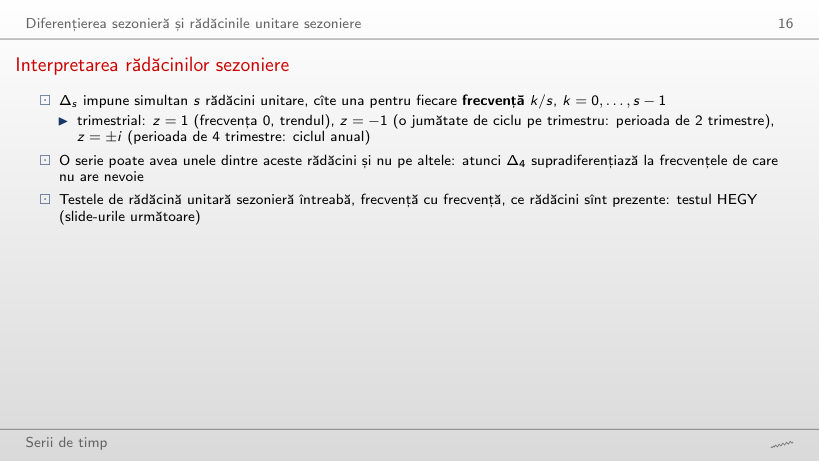
Exemplu rezolvat
Răspuns
Perioada 12/1 = 12 luni, ciclul anual: z₁ = 0,866 + 0,500i, iar perechea (k = 1, k = 11) dă factorul 1 − 1,732z + z². Pentru s = 12 există 12 rădăcini: două reale (1 și −1, perioada de 2 luni) și cinci perechi complex conjugate, cu perioadele 12, 6, 4, 3 și 2,4 luni.
PIB-ul României: diferențe obișnuite și sezoniere
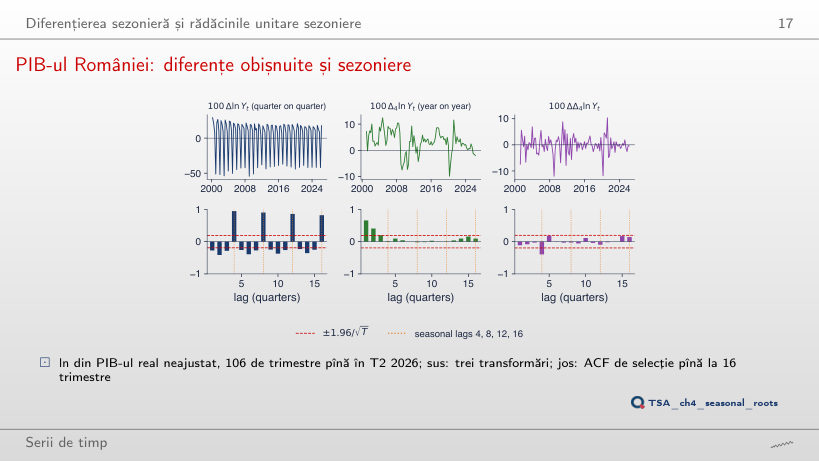
Răspuns
Da: −0,34, în afara benzii ±0,23 (T = 75). Valoarea negativă la lagul sezonier nu vine din 2020, ci din tiparul sezonier care se modifică lent: semnătura unui MA sezonier. La Δ ln Y, ACF rămîne 0,94 la lagul 4 și pe eșantionul scurt; la Δ₄ ln Y, ACF la lagul 1 este 0,68.
Testul HEGY
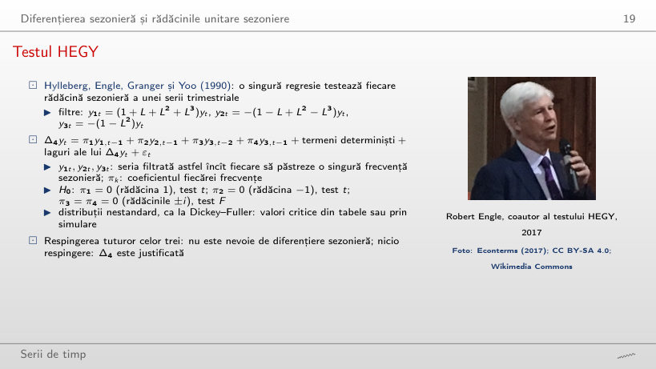
Exemplu rezolvat
Răspuns
Nu: cu k = 0, t(π₂) = −3,34 < −2,77 și F(π₃, π₄) = 17,25 > 6,64, deci rădăcinile −1 și ±i sînt respinse; rămîne doar rădăcina 1 (t(π₁) = −1,46). Cu k = 1, ales după AIC, nicio ipoteză nu este respinsă (−1,97; −2,19; 6,12). Autocorelația lăsată în reziduuri de regresia fără laguri schimbă decizia. Și sfîrșitul eșantionului contează: pînă în T4 2025, cu k = 1, t(π₂) = −2,88 și F = 8,38 resping două ipoteze.
Teste de rădăcină unitară sezonieră pe date din România
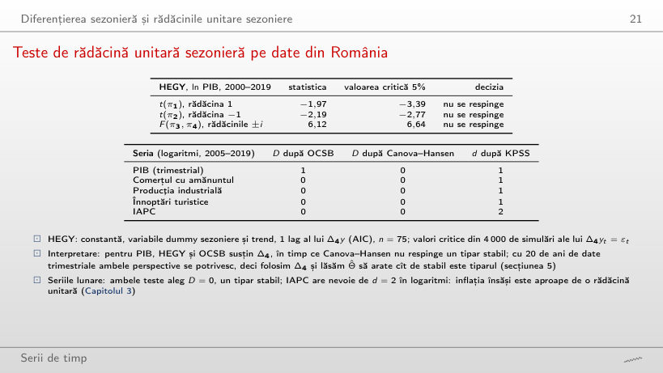
Răspuns
Pentru PIB nu se schimbă: OCSB dă D = 1, Canova–Hansen D = 0 și KPSS d = 1 pentru orice sfîrșit. Se schimbă la înnoptările turistice (OCSB dă D = 1 pentru 2012 și 2020, iar d trece între 0 și 1), la producția industrială (D = 1 după OCSB pentru 2012 și 2014) și la IAPC (d = 1 pentru 2012, apoi d = 2). Canova–Hansen nu respinge sezonalitatea stabilă pentru nicio serie și niciun sfîrșit.
Modele SARIMA
Exemplu rezolvat: modelul airline
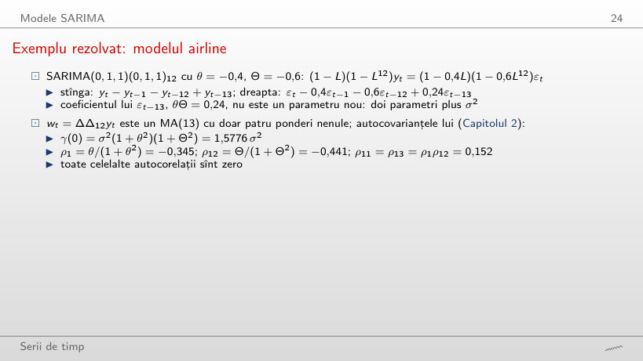
Exemplu rezolvat
Răspuns
Nu exact: estimațiile pe 1949–1960, θ̂ = −0,402 și Θ̂ = −0,557, implică ρ₁₁ = ρ₁₃ = 0,147, iar ACF de selecție a lui w_t este 0,064 la lagul 11 și 0,152 la lagul 13. Ambele valori sînt în banda ±0,17, deci testul nu le separă de valoarea modelului. La lagurile 1 și 12 modelul implică −0,346 și −0,425, iar datele dau −0,341 și −0,387.
ACF și PACF teoretice pentru trei modele sezoniere
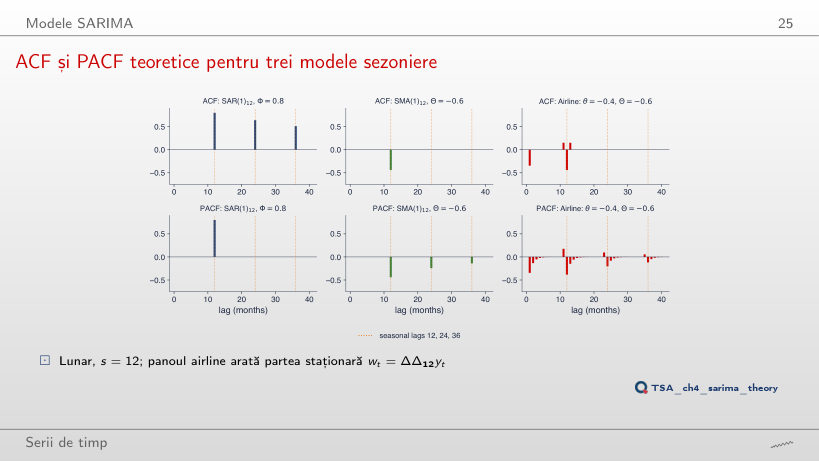
Răspuns
Își schimbă semnul: −0,152. Sateliții sînt produsul ρ₁ρ₁₂, iar ρ₁ = θ/(1 + θ²) trece de la −0,345 la 0,345, în timp ce ρ₁₂ = −0,441 rămîne. La SAR(1)₁₂ cu Φ = 0,8, ACF descrește 0,8; 0,64; 0,512 la lagurile 12, 24, 36; la SMA(1)₁₂ cu Θ = −0,6, PACF este −0,242 la lagul 24.
Prognoza cu modele SARIMA
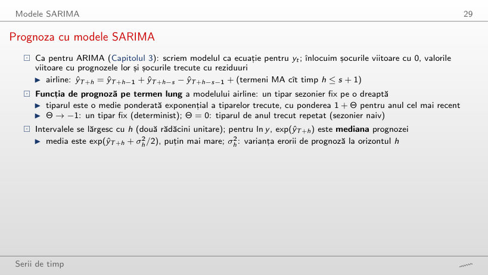
Exemplu rezolvat
Răspuns
+0,0220 în logaritmi, adică circa 2,2%: prognoza este 348,6 mii, față de 341,0 fără termenii MA; valoarea reală a fost 360. Termenii MA folosesc reziduuri cel mult pînă la lagul 13, deci de la h = 14 sînt 0 și prognoza repetă tiparul pe dreaptă (februarie 1960: 354,6 față de 391 real).
Studiu de caz: modelul airline
Identificarea modelului airline
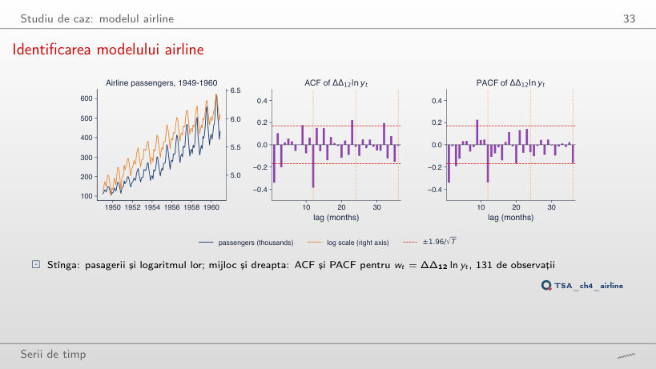
Răspuns
Autocorelații pozitive care scad încet: 0,71 la lagul 1, 0,48 la lagul 3, încă 0,19 la lagul 8. Trendul nu este eliminat, iar seria rămîne nestaționară. Cu ΔΔ₁₂ ln y rămîn valori nenule la lagurile 1 (−0,34) și 12 (−0,39); în afara benzii ±0,17 mai ies lagurile 3, 9, 23 și 32. PACF are −0,341, −0,013 și −0,193 la lagurile 1, 2 și 3: valoarea de la lagul 2 este practic zero.
Modelul airline: prognoze în afara eșantionului
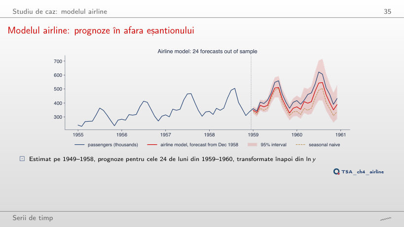
Răspuns
Mult mai mare: 852 (intervalul [201; 1053]), deoarece cele două rădăcini unitare fac varianța erorii să crească cu orizontul. Valoarea reală, 432, rămîne în interval de la orice origine. Din 1958: prognoza 388, intervalul [286; 526], MAPE 8,5% față de 15,5% pentru metoda sezonieră naivă.
Interpretarea prognozelor airline
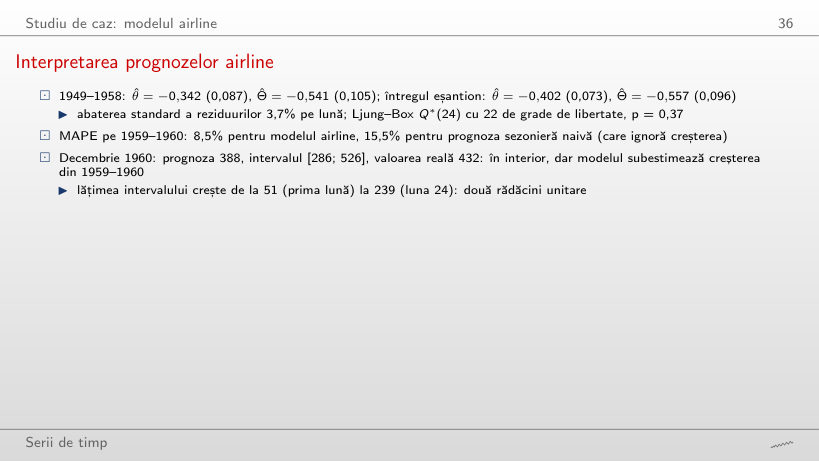
Răspuns
Nu: pentru 1949–1958, p = 0,71; p = 0,37 este testul pe eșantionul complet, 1949–1960. Estimațiile depind de lungimea eșantionului: pe 1949–1952, Θ̂ = −0,904 cu SE 3,39 (aproape neidentificat), pe 1949–1958, Θ̂ = −0,541 cu SE 0,105. Cu originea în decembrie 1952, MAPE pînă în decembrie 1960 este 16,8% pentru modelul airline și 38,2% pentru metoda sezonieră naivă.
Studiu de caz: PIB-ul neajustat al României
Modele SARIMA pentru PIB-ul României
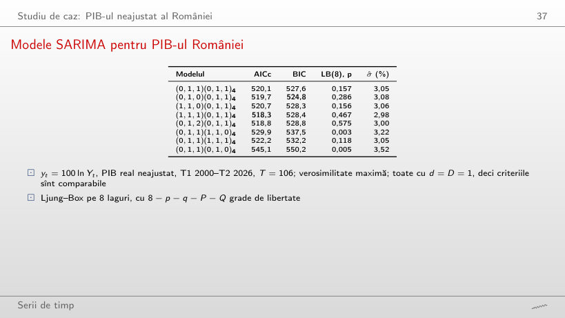
Exemplu rezolvat
Răspuns
Nu trec cele trei fără MA sezonier: (0,1,1)(1,1,0)₄ cu p = 0,003, (1,1,0)(1,1,0)₄ cu p = 0,004 și (0,1,1)(0,1,0)₄ cu p = 0,005. Modelul ales după BIC, (0,1,0)(0,1,1)₄, are p = 0,286 cu m = 8 și p = 0,526 cu m = 12. AICc diferă cu doar 1,4 între acest model și (1,1,1)(0,1,1)₄; BIC penalizează mai mult parametrul în plus.
Diagnosticarea modelului pentru PIB
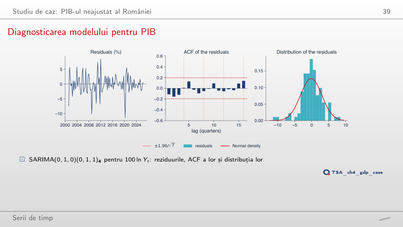
Răspuns
Nu: Q*(8) = 19,5 cu 6 grade de libertate, p = 0,003, iar AICc crește la 529,9, față de 519,7. Pentru SARIMA(0,1,0)(0,1,1)₄: Q*(8) = 8,55 cu 7 grade de libertate, p = 0,286, și Q*(12) cu p = 0,526. În toate modelele reziduurile nu urmează distribuția Normală: pentru modelul BIC, Jarque–Bera 22,0 și reziduul −11,4% în T2 2020.
Prognozele PIB-ului României
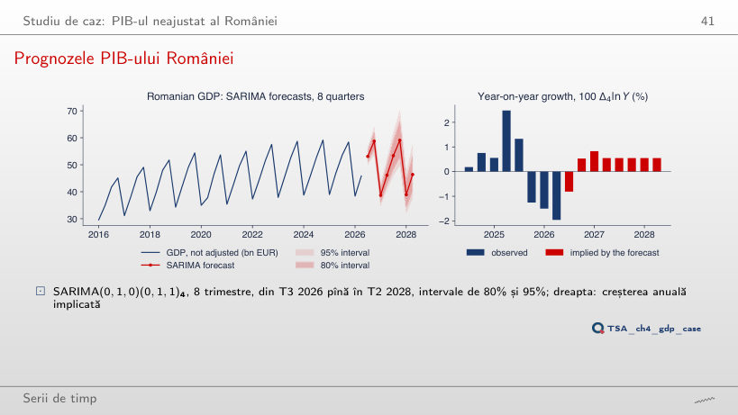
Răspuns
Aceeași în fiecare trimestru: −1,96%, creșterea anuală din T2 2026. Cu Θ = 0, modelul este Δ₄y_t = Δ₄y_{t−1} + ε_t, iar prognoza repetă ultima creștere anuală. Cu Θ̂ = −0,577, tiparul are ponderea 1 + Θ̂ = 0,42 pentru anul cel mai recent: creșterea implicată −0,81%; 0,53%; 0,83%; 0,55%, apoi 0,55%. Cu Θ = −0,95, tiparul este aproape fix, iar creșterea implicată urcă la 3,99%.
Interpretarea prognozelor PIB
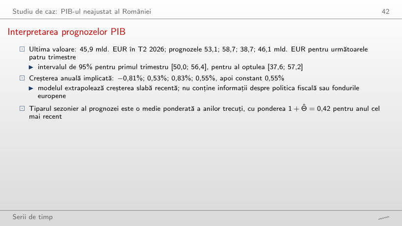
Răspuns
Prognozele scad puțin: 52,5; 57,3; 37,6 și 45,0 mld. EUR, față de 53,1; 58,7; 38,7 și 46,1 cu Θ = −0,577; intervalul pentru T2 2028 devine 32,4–60,0, față de 37,6–57,2. Cu Θ = −0,95 (tipar aproape fix) intervalul este 37,3–66,1: abaterea standard a reziduurilor crește cînd Θ se depărtează de estimația de verosimilitate maximă.
Ajustarea sezonieră în practică
Serii neajustate și ajustate
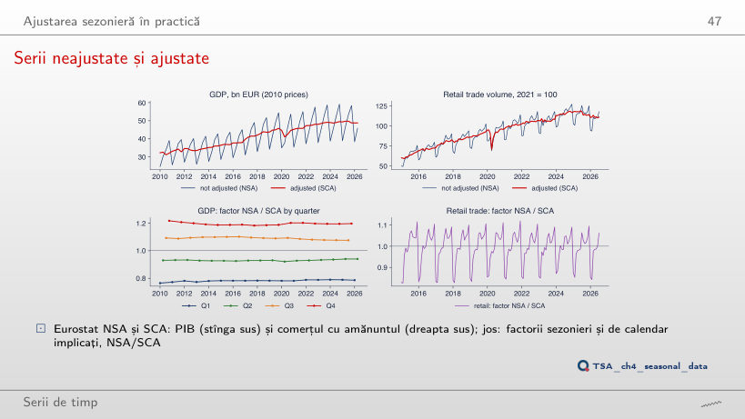
Răspuns
Cu −0,06%: practic deloc. Scăderea seriei neajustate este tiparul sezonier, cu factorul NSA/SCA 0,786 în T1 și 1,197 în T4 2025. Creșterea anuală spune același lucru în ambele serii: −1,50% (NSA) și −1,14% (SCA). Totalurile anuale coincid: 196,4 mld. EUR în 2024.
Interpretarea seriilor ajustate
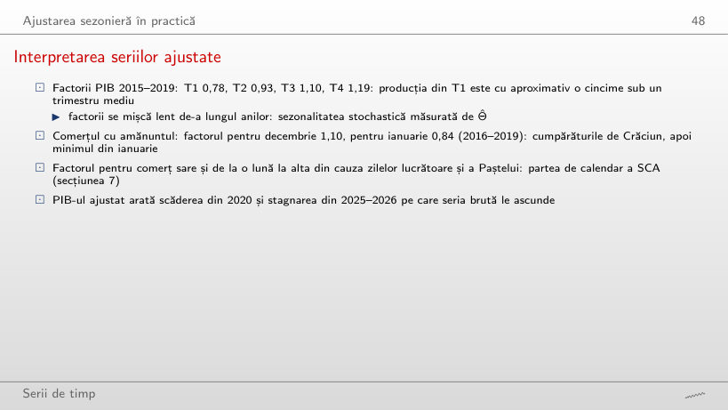
Exemplu rezolvat
Răspuns
Foarte puțin: T1 0,77 și 0,79, T2 0,93 și 0,93, T3 1,09 și 1,08, T4 1,20 și 1,20. Tiparul se mișcă încet, cum indică Θ̂ = −0,577. La comerțul cu amănuntul, factorul din ianuarie urcă de la 0,84 (2015–2019) la 0,86 (2020–2025), iar cel din decembrie rămîne 1,10.
Termeni Fourier și efecte de calendar
Variabile dummy sezoniere și termeni Fourier
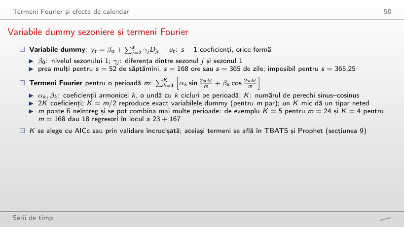
Exemplu rezolvat
Răspuns
Pe 1 februarie 2025: +0,64 GW (644 MW), cu toate cele patru perechi; minimul este pe 13 mai 2025, −0,60 GW. Prima pereche are amplitudinea 0,499 GW. La turism, ajustarea cu K = 3 dă pentru august 0,765, față de efectul observat 0,847.
Aproximarea Fourier a unui tipar sezonier
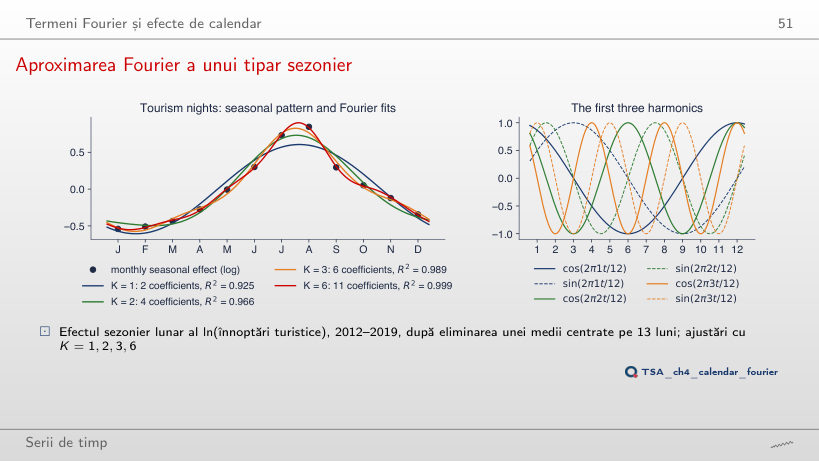
Răspuns
Trei: K = 3, șase coeficienți, R² = 0,989. K = 1 dă 0,925, K = 2 dă 0,966. Pentru K = 6, sin(2π6t/12) este zero în fiecare lună: ajustarea din grafic are 10 coeficienți efectivi și R² = 0,999; cu cos(2π6t/12), cei 11 coeficienți trec prin toate cele 12 puncte (R² = 1), ca 11 variabile dummy.
Interpretarea ajustărilor Fourier
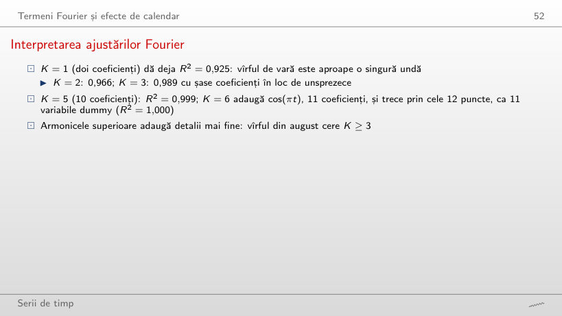
Răspuns
K = 1 (AICc −41,5, față de −40,1 la K = 2 și −32,0 la K = 3), deși R² crește de la 0,925 la 0,989 și vîrful din august cere K ≥ 3. Cu doar 12 puncte, corecția 2k(k + 1)/(12 − k − 1) crește repede: 28 la K = 3; la K = 5 și K = 6 AICc nu mai este definit. Ajustarea „K = 6” din slide, cu R² = 0,999, este ajustarea cu K = 5; cu K = 6 complet, R² = 1.
Efecte de calendar și Paștele ortodox
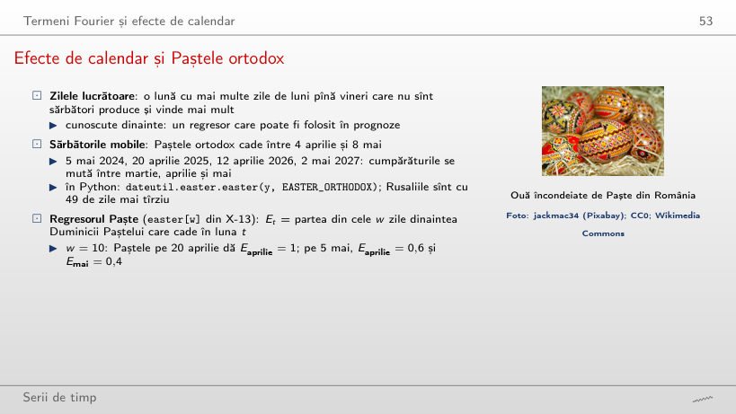
Exemplu rezolvat
Răspuns
Fereastra merge de la 22 aprilie la 1 mai: 9 zile în aprilie (E = 0,9) și 1 zi în mai (E = 0,1). Cu β̂_E = 5,95% pentru alimente, efectul este +5,35% în aprilie și +0,59% în mai. În 2024 (5 mai): 0,6 în aprilie și 0,4 în mai; în 2025 (20 aprilie): 1 în aprilie.
Paștele și comerțul cu amănuntul din România
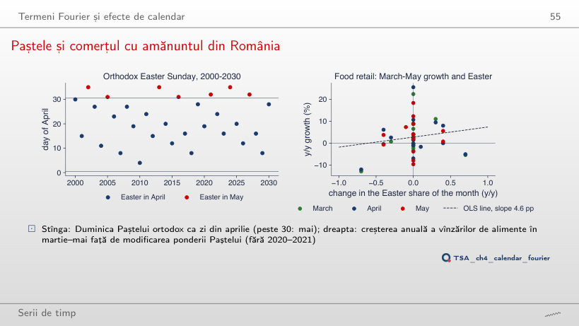
Răspuns
Scade la 1,6% (eroarea standard 1,6, t = 1,0) și nu se mai separă de zgomot. Cu w = 10 (curs): 5,9% (2,3; t = 2,6); cu w = 12: 6,1% (t = 2,9). Cumpărăturile de Paște se întind pe mai multe zile; un regresor prea îngust pune o parte din ele în luna greșită. Zilele lucrătoare rămîn în jur de +0,6% pentru alimente și +1,0% pentru total, pentru orice w.
Interpretarea efectului Paștelui
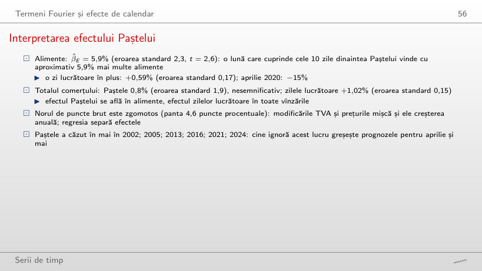
Răspuns
Da: cu w = 5, β̂_E = 3,0% (SE 1,8, t = 1,7), nesemnificativ la 5%; cu w = 10, 5,9% (SE 2,3, t = 2,6); cu w = 20, 5,4% (SE 1,4, t = 3,8). Pentru tot comerțul, efectul rămîne mic (−0,1%; 0,8%; 1,5%), în timp ce zilele lucrătoare contează la orice w (circa +1% pe zi).
Sezonalitate multiplă: consumul de electricitate
Consumul orar: ziua și săptămîna
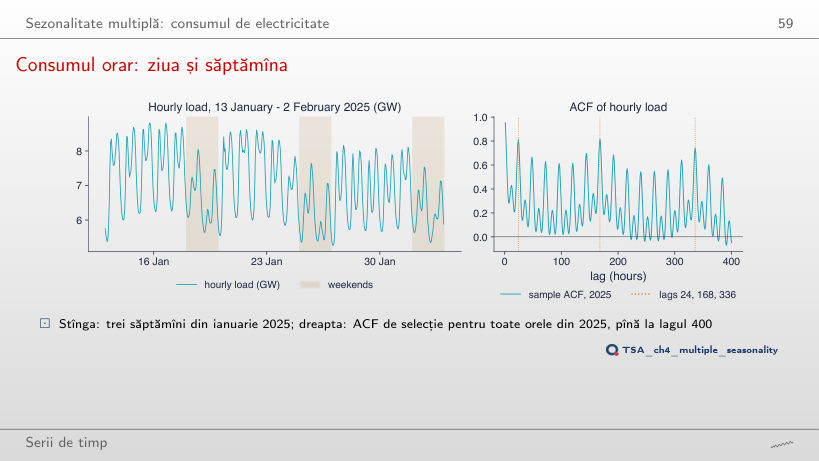
Răspuns
La lagul 168: 0,817 față de 0,811. Diferența este mai mare în 2023 (0,841 și 0,800) și 2024 (0,846 și 0,804). La lagul 84 (o jumătate de săptămînă) ACF este doar 0,22. Ciclul zilnic: minimul la ora 3:00 (5,3 GW), maximul la ora 19:00 (7,3 GW).
MSTL: cîte o componentă sezonieră pentru fiecare perioadă
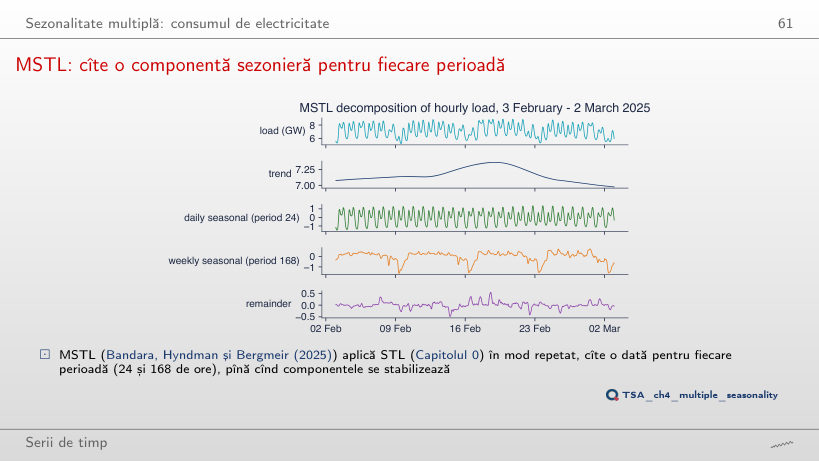
Răspuns
13%: Paștele (20 aprilie) și 1 Mai nu urmează tiparul zilnic sau săptămînal, deci ajung în componenta neregulată. În februarie: 70% componenta zilnică, 29% cea săptămînală. Ponderea componentei săptămînale variază între 20% (august) și 43% (iunie).
Consumul zilnic și sărbătorile legale
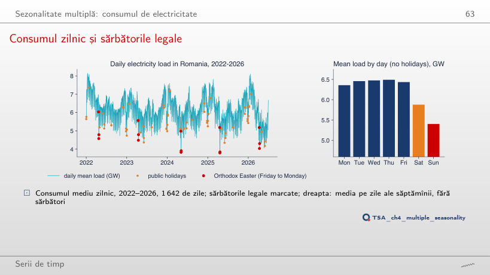
Răspuns
Duminica Rusaliilor, 4 iunie 2023: 4,37 GW, sub Duminica Paștelui, 16 aprilie 2023 (4,48 GW). În 2022, 2024 și 2025 cea mai joasă zi este Duminica Paștelui; pe tot eșantionul, 20 aprilie 2025 (3,79 GW, media 6,18 GW). Sîmbăta este cu 9%, duminica cu 17% sub miercuri, iar ianuarie cu 25% peste mai.
O regresie armonică dinamică pentru consumul zilnic
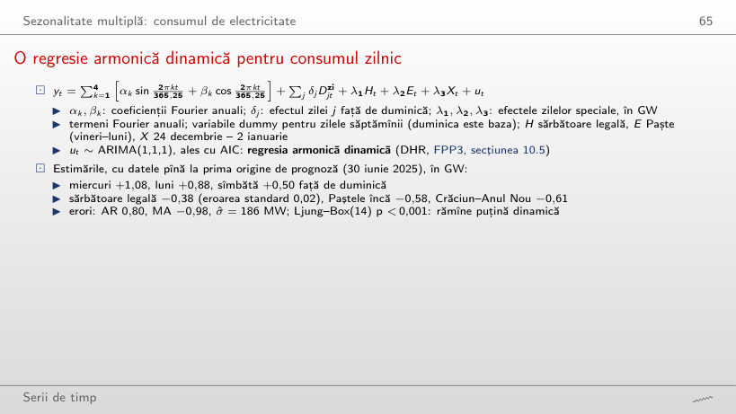
Exemplu rezolvat
Răspuns
−0,145 GW: efectul zilei de luni, +0,884, plus componenta anuală, −0,448, plus variabila dummy a Paștelui, −0,581. O luni obișnuită din aceeași perioadă ar avea circa +0,44 GW. Nivelul seriei vine din erorile ARIMA(1,1,1), cu AR 0,80 și MA −0,98.
TBATS și Prophet
Componentele Prophet pentru consumul zilnic
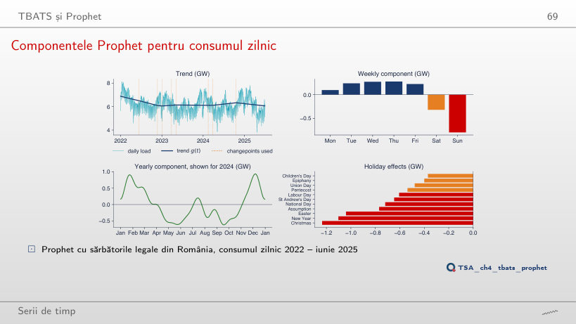
Răspuns
Crește de la 197 la 226 MW. Fără sărbători, zilele de Crăciun și Paște rămîn în reziduuri, iar componenta anuală se deformează: maximul ei trece de la 7 decembrie la 24 ianuarie 2024. Cu sărbătorile, efectele sînt −1,24 GW (Crăciunul), −1,10 GW (Anul Nou) și −1,04 GW (Paștele).
Evaluarea prognozelor
Validarea încrucișată pentru serii de timp
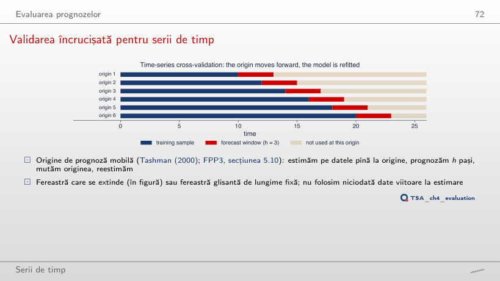
Răspuns
În trei: ferestrele consecutive se suprapun pe h − 1 = 2 perioade, deci erorile sînt corelate pînă la lagul h − 1, iar testul Diebold–Mariano folosește h − 1 autocovarianțe. În schema cursului originile sînt la 14 zile, iar h = 14: ferestrele nu se suprapun, deci testul are o valoare pe fereastră și h = 1 în formulă.
Testul Diebold–Mariano
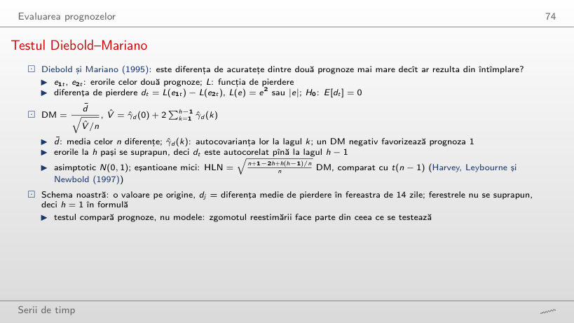
Răspuns
Doar la h = 8 și h = 10–14 (|HLN| > 2,06); la h = 1–7 și h = 9 nu. O singură zi pentru fiecare origine are mai mult zgomot decît media pe 14 zile. DHR față de Prophet: respins la h = 1, 2 și 12–14.
Exemplu rezolvat: un test Diebold–Mariano
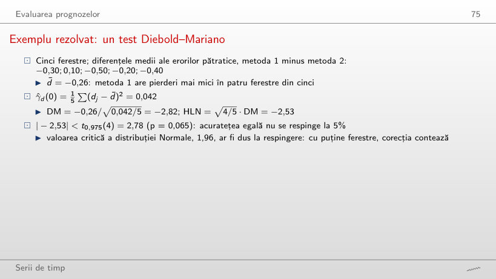
Exemplu rezolvat
Răspuns
DM = −4,51, HLN = −4,42, p < 0,001; DHR are pierderea mai mică în 22 din 26 de ferestre (d̄ = −0,157 GW²). Corecția HLN este √(25/26) = 0,981, deci contează puțin la n = 26; în exemplul cu cinci ferestre este √(4/5) = 0,894, iar valoarea critică t(4) = 2,78 în loc de 1,96 schimbă decizia.
Prognoze dintr-o singură origine, peste Paștele din 2026
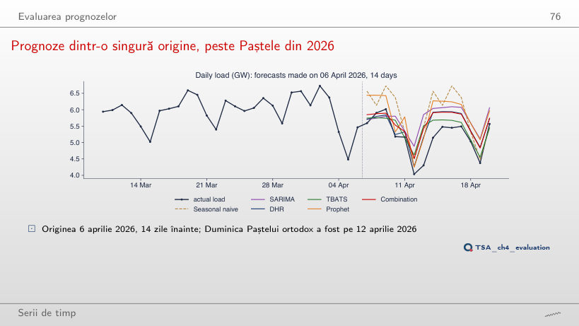
Răspuns
ETS, cu 299 MW, urmat de TBATS (309) și DHR (344); metoda sezonieră naivă are 686, Prophet 616. ETS nu are o linie în graficul din slide, deși are cea mai mică eroare în această fereastră. După Paște consumul rămîne sub toate prognozele, iar ETS și TBATS urmează nivelul ultimelor zile.
Rezultatele validării încrucișate pentru consumul zilnic
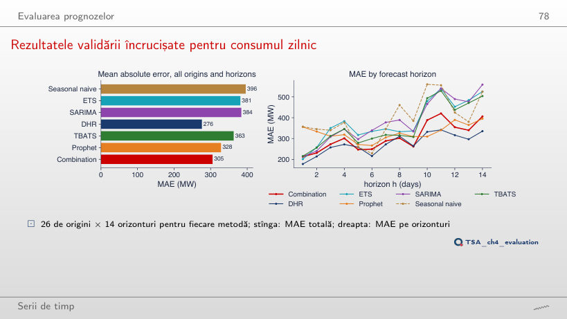
Răspuns
Nu: TBATS 317 MW și DHR 318 MW sînt la egalitate, iar testul DM nu le separă (HLN 0,83, p = 0,431). În cele 18 ferestre fără sărbători, DHR are 258 MW, înaintea combinării (290). Pe toate cele 26 de ferestre: DHR 276, combinarea 305, Prophet 328 MW; ETS, SARIMA și TBATS nu sînt separate de metoda sezonieră naivă (p = 0,431; 0,231; 0,145).
Interpretarea rezultatelor validării încrucișate
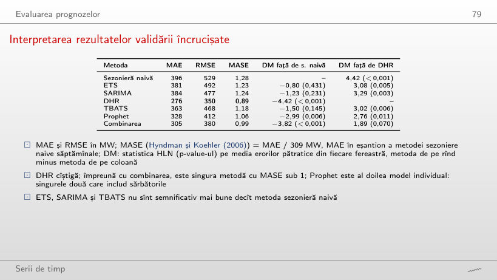
Exemplu rezolvat
Răspuns
Fără sărbători (18 ferestre), DHR are MAE 258 MW și MASE 0,83, iar combinarea 0,94. În cele 8 ferestre cu sărbători nicio metodă nu are MASE sub 1: TBATS 317 MW, DHR 318 MW, combinarea 340 MW. Pe orizonturile 8–14 nici DHR nu mai are MASE sub 1 (1,02).
Un al doilea test: PIB-ul României
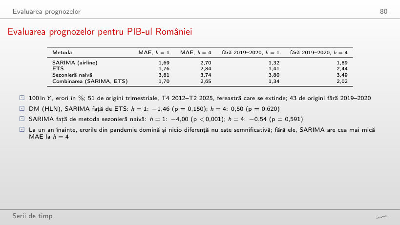
Răspuns
Nu: HLN = −1,11 (p = 0,275) la h = 4 și −1,47 (p = 0,148) la h = 1, cu 43 de origini. Cu toate cele 51 de origini, la h = 4 SARIMA are chiar MAE 2,70 față de 2,84, iar HLN = 0,50 (p = 0,620): pierderea pătratică a SARIMA este mai mare în anii pandemiei.
Combinarea prognozelor
Avantajul combinării prognozelor
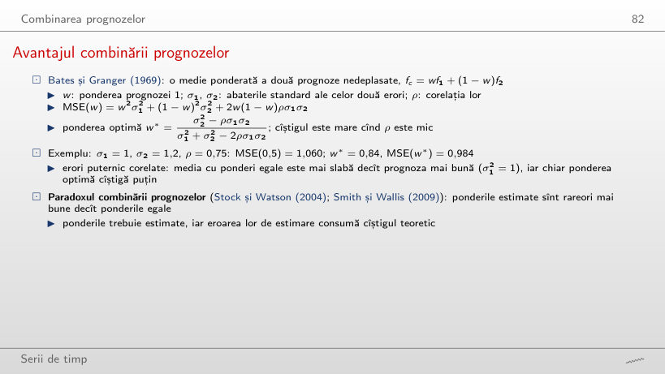
Exemplu rezolvat
Răspuns
Nu: σ₁ = 348 MW, σ₂ = 411 MW, ρ = 0,75; varianța combinării egale este 126 036 MW², peste σ₁² = 120 854. Ponderea optimă este w* = 0,82 (MSE 118 370), aproape de DHR singur. În MAE, combinarea egală are 283 MW, DHR singur 276. Erorile puternic corelate lasă puțin loc pentru cîștig, ca în exemplul din slide (1,060 față de 1).
Combinarea DHR și Prophet
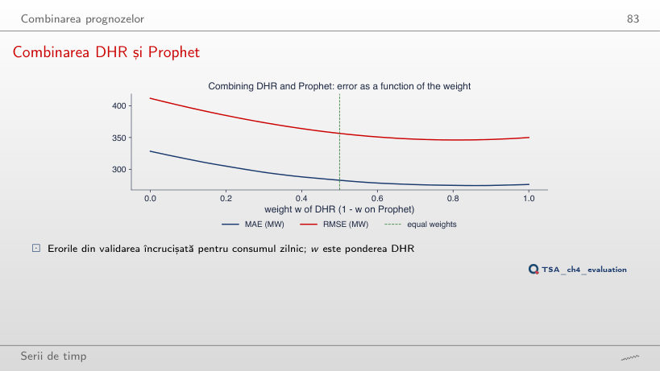
Răspuns
295 MW: sub ambele componente. Cu erori slab corelate, greșelile se compensează parțial; ponderea cea mai bună retrospectiv este w = 0,37 (MAE 286). Pentru DHR și Prophet (ρ = 0,75): 283 MW cu ponderi egale, față de 276 pentru DHR singur; pentru ETS și TBATS (ρ = 0,98), media cu ponderi egale (370) este mai slabă decît TBATS singur (363).
Interpretarea combinării
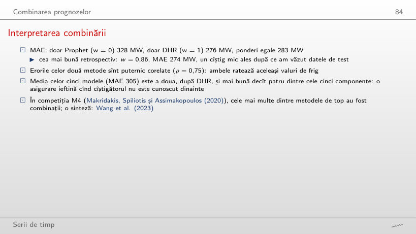
Răspuns
Puțin: MAE 299 MW, față de 305 cu ponderi egale; ponderile alese a posteriori dau 296, iar DHR singur 276. Pentru DHR și Prophet: 283 cu ponderi egale, 281 din ferestrele anterioare, 274 cu cea mai bună pondere a posteriori (w = 0,86). Cîștigul ponderilor estimate este mic, cum spune „forecast combination puzzle”.
PIB-ul României: Eurostat, volume înlănțuite (prețuri 2010), serie neajustată (NSA) și ajustată sezonier și pentru efectele de calendar (SCA), în versiunea folosită în curs. Comerțul cu amănuntul, producția industrială și înnoptările turistice: Eurostat, pînă în iulie 2026; IAPC: Eurostat, pînă în august 2026. Consumul de electricitate: ENTSO-E, „monthly hourly load values”, România, 1 ianuarie 2022 – 30 iunie 2026, ora de iarnă a României. Pasagerii aerieni: setul de date AirPassengers (Box și Jenkins), 1949–1960. Prognozele validării încrucișate sînt cele din curs; variantele care nu apar în curs sînt rulări suplimentare ale codului capitolului, cu aceleași date.